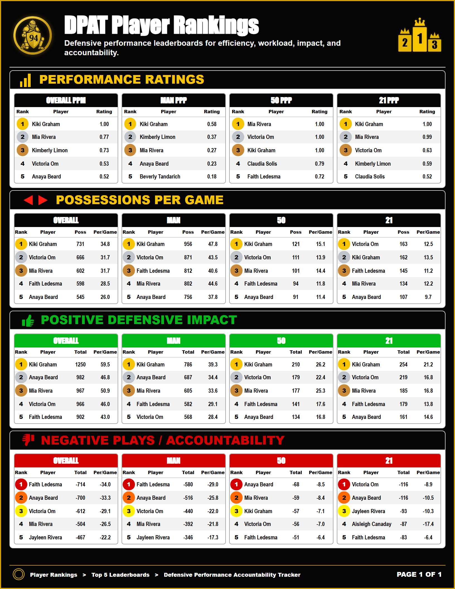

DPAT
Defensive tracking, accountability, player rankings and game breakdowns.
About Coach Fogarty
Building Programs Through Precision, Accountability and Player Development
20+ Years of Experience | 65-12 Head Coaching Record | Collegiate System Specialist
Matthew Fogarty is a college basketball coach, player development coach and program builder with 20+ years of experience across NCAA, NAIA, 3C2A, CIF and AAU basketball. His coaching identity was built through elite playing experience, championship program leadership and staff-ready systems designed to help programs operate with structure.

01 / The Standards
Before coaching, Coach Fogarty built a competitive college playing career that shaped his standards for preparation, toughness, leadership and player development. His playing background gave him first-hand experience with the habits required to compete, produce and win at the next level.
I do not just teach the game. I lived the habits required to reach the next level. My standards were forged through championships, college playing experience and a full-ride scholarship - experiences that now shape how I develop players.


02 / The Evolution
Great coaches are great students. Coach Fogarty's journey across youth, club, high school and college basketball gave him a broad view of how players learn, how programs grow and how staff systems must adapt at each level. That cross-level experience allows him to build teaching systems that are clear, scalable and practical.
The journey from player to coach sharpened his ability to teach fundamentals, build confidence, organize teams and communicate standards across different ages, skill levels and competitive environments.
03 / The Proof
The strongest proof of Coach Fogarty's approach is program impact. At Pacific Academy, he helped build a program from a struggling foundation into a championship culture with a 65-12 record and five consecutive league titles. At Santa Ana College, he contributed to a 20-win season, Top 15 state ranking and the program's first playoff-host season since 2016-17.
Pacific Academy shows he can lead and build. Santa Ana College shows he can support a staff at the college level.


04 / The Innovation
Championships are not accidents. They are built through repeatable habits, measurable standards and clear teaching systems. Coach Fogarty's current work includes player development systems, scouting organization, recruiting workflows, DPAT defensive tracking and The Archer training tool.
Every system is designed to make teaching clearer, preparation more efficient and player growth easier to measure.
Defensive tracking, accountability, player rankings and game breakdowns.
Shooting arc, release point, rhythm and contested-shot preparation.
Individual plans, drill logs, progressions and measurable growth.
Personnel reports, game prep, recruiting organization and staff-ready resources.
Coaching Philosophy
Coach Fogarty's coaching philosophy is built on detail, structure, confidence and relationships. He believes players grow when teaching is clear, standards are consistent and development connects directly to winning.
Clear teaching points, film feedback and habits players can repeat.
Progressions and measurable goals that give players a clear path.
Individual development tied to team execution and program standards.
Scouting, communication and systems that help a staff operate.